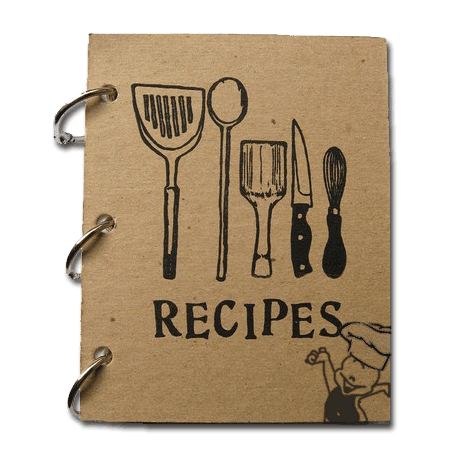

Worlds Best Cashew Nut Factory
Cashew Nut Industries Private Limited are the renowned name involved in
wholesaling, exporting, supplying, trading and importing a range of fast-moving consumer goods (FMCG) foods.
Being a leading exporter, we are growing day by day.
Subscribe to Our News Letter

Quality of our Products
Marketing, Quality Control occurs at several levels
- Farmers
- Local Shelling Factories
- Local Buyers
- Exporters
Why the quality ontrol of cashewnuts is necessary.
During commencial transaction between a farmer and a tracker, several criteria can be used to specify the cashew nut Quality: color, shape, brightness. But The important is the quality of the kernel inside the shell.
Steps of the quality control
- Material to weight: One electronic balance with a precesion of 0.5 gram
- Material to take nuts from bag: Catheter Bag
- Material to separate the kernel from the shell: one scooper
- Plastic Buckets: For the samples
- 4 Plastic bowls to store kernels and nuts during the analysis. The use of bowls of different colors would sorting out of the kernels
- A pair of latex Gloves to protect hands.
We Produce A1 quality of products and export the cashewnuts to other countries like USA, Australia, Canada Etc.
Todays Recipies*
Cashew Nut Curry or Kaju Curry
Ingredients:Kaju - 1/2 cup Potato - 1 (peeled and cut) Onion - 2 big (chopped) Coconut - 1/4 (grated) Red chilly powder - 1/2 tsp Garam masala powder - 1/4 tsp Turmeric powder - 1/4 tsp Coriander leaves - 1/2 tbsp Oil -1 tbsp Salt
Method
Soak kaju in hot water for 15-20 min. Heat oil in a pan and saute half of the chopped onion till brown. Add grated coconut and also fry it till golden. Allow it to cool abnd grind to a fine paste in mixture with little water. Heat oil and fry the remining onion till transperent. Seperate each kaju and add in onion fry again. Now add potato pieces,red chilly powder,garam masala powder,turmeric powder and salt. Cook for 5-6 min with 1 cup of water on low flame till the potato gets cooked Add grind coconut and bring it to boil.Upcomig Events **


Membership and Certifications
We are holder of quality management systems certification according to IS/ISO 9001: 2000
- . IS-15000: 1998 (HACCP) issued by the Bureau Of Indian Standards.
- . In recognition of the organization as a leading exporter of the organization is also a registered member of the
(Cashew Export Promotion Council of India) - . Member Federation Of Indian Exporters Organization.
- . Member of AFI (Association Of Food Industry), and also the FDA, U S A (Food And Drug Administration)